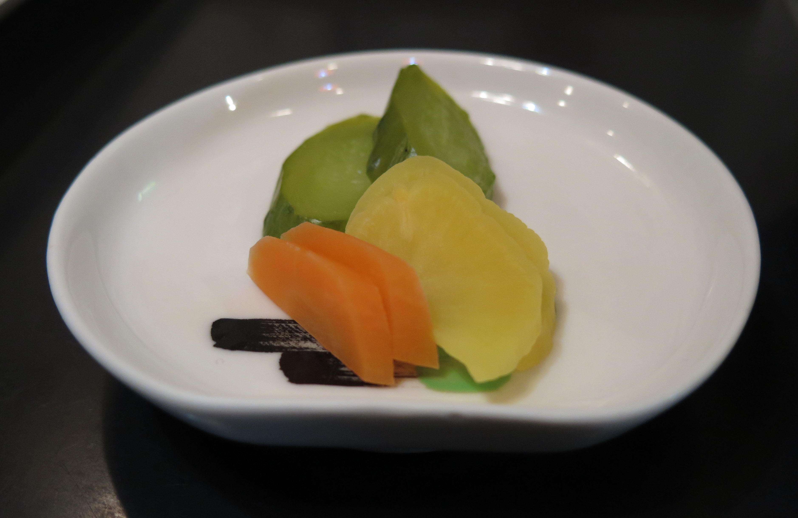
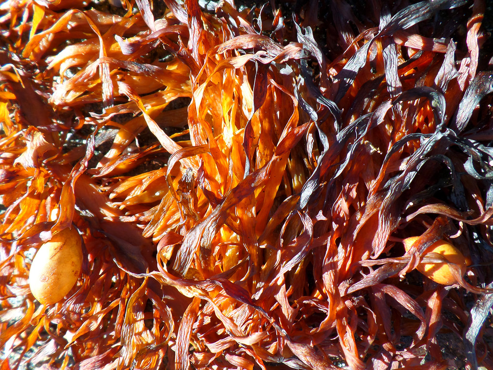
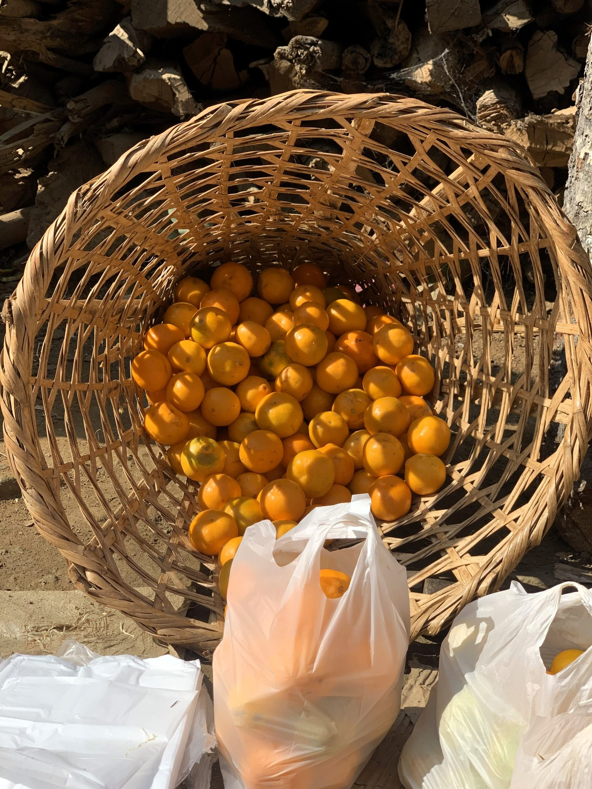

お土産・特産品
地元でとれた野菜や海産物の加工品を中心に、出雲崎らしい品揃えを取り揃えています。
お土産・特産品の紹介
出雲崎町観光物産センターでは、地元でとれた野菜や、昆布・鮭の酒浸しといった海産物の加工品を中心にお取り扱いしています。旅の途中に、産地ならではの味をぜひお持ち帰りください。
品揃えのご紹介

地元野菜・漬物
はりはり漬けなど、地元で作られた漬物や野菜を店頭でお取り扱いしています。センター前では、地元のお母様が落花生や果物などを直接販売してくださることもあり、人の温かみを感じられるのも出雲崎町観光物産センターならではの魅力です。

海産物加工品
昆布や鮭の酒浸しなど、日本海に面した町らしい海産物の加工品を豊富にお取り扱いしています。ご家庭用にも、贈り物にもおすすめです。

果物・季節の産直品
季節ごとにとれる果物など、地元の産直品もあわせてご紹介しています。その時期ならではの味わいを、ぜひ店頭でお確かめください。
お客様のクチコミより
★★★★☆ レビューB
海が間近に見える物産館。センターの前で、はりはりや落花生や果物などを販売しているお母様がいます。いつも幾つか買わせてもらって美味しくいただいています。
★★★★☆ レビューE
品揃え豊富で、昆布や鮭の酒浸し等購入させて頂きました